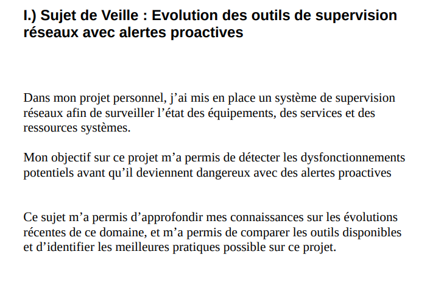

Salut, je m'appelle Mathéo PAQUIN !
Bienvenue dans mon portfolio 🙂
Étudiant de 2ème année au Lycée Gustave Eiffel à Bordeaux

À Propos de Moi
Bienvenue sur mon portfolio ! Je suis Mathéo PAQUIN, actuellement étudiant en 2ème année de BTS SIO, option SISR (Solutions d'Infrastructure, Systèmes Réseaux), au Lycée Gustave Eiffel à Bordeaux.
Je suis passionné par la mise en place de services et la protection des infrastructures informatiques, notamment les systèmes et réseaux. Chaque projet est pour moi une opportunité d'apprendre, d'innover et de dépasser les attentes.
En dehors de mes études, je travaille en tant que Vendeur à Marie Blachère à Pessac, une expérience qui enrichit mes compétences en communication et ma capacité d'adaptation, tout en stimulant ma créativité.
Télécharger mon CVMon Stage
Cette section est dédiée à la présentation de mes expériences de stage. Vous y trouverez des détails sur les missions réalisées, les compétences acquises et les technologies utilisées.
Telelec Informatique
2 Juin 2025 au 4 Juillet 2025 | 81 Rue de la Morandière 33185 Le Haillan
- Premier Projet : Mettre en place un système de supervision réseau intelligent avec alertes proactives
- Deuxième Projet : Mise en place d'un Honeypot sur un poste de travail
- Troisième Projet : sécuriser un ou plusieurs postes de travail (Windows ou Linux) en appliquant des mesures de durcissement ("hardening"), en réalisant des audits de configuration à l’aide d’outils standards, puis en testant la détection de vulnérabilités avec des outils d’analyse.
Technologies/Outils :
Zabbix/Nagios/Prometheus + Grafana, intégration email/Slack, scripts d’auto-diagnostic pour le premier projet.
Création d'un honeypot SSH pour attirer les attaquants, enregistrer leurs tentatives de connexion et capturer les commandes pour le deuxième projet.
Mise en place de mesures de durcissement ("hardening"), audits de configuration et tests de détection de vulnérabilités pour le troisième projet.
Lycée Saint-Genès
13 Janvier 2026 au 13 Mars 2026 | 160 Rue de Saint-Genès 33000 Bordeaux
- Premier Projet : Déploiement de poste : identifier les ressources numériques en déployant des services et ainsi analyser les objectifs et les modalités d'organisation de projet
- Deuxième Projet : Configuration de Veyon : Référencer les services en ligne de l’organisation et mesurer leur visibilité.
Technologies/Outils :
Microsoft Intunes : permettant de mettre les noms des ordinateurs ainsi leurs données et les applications pour chaque établissement (Collège, Lycée Général, Lycée des Métiers)
Installation de Windows avec une clé USB automatisée : Permettant d'installer le système d'exploitation avec les configurations de Microsoft Intunes qui ont été configurés par le service Informatique de Saint-Genès
Mes Réalisations Professionnelles
Voici des documents détaillant certaines de mes réalisations techniques et projets spécifiques, classés par année.
1ère Année
Fiches RP & CR

Fiche RP - Semaine 1
Mise en place d'un système de supervision réseau intelligent avec alertes proactives.


Compte Rendu Semaine 1
Voici le compte rendu de la première semaine de stage de première année de BTS SIO.

Compte Rendu Semaine 2
Voici le compte rendu de la deuxième semaine de stage de première année de BTS SIO.

Compte Rendu Semaine 3
Voici le compte rendu de la troisième semaine de stage de première année de BTS SIO.
Documentations

Doc. Supervision Réseau
Documentation effectuée en stage de première année de BTS SIO sur la supervision.

2ème Année
Fiches RP & CR

Fiche RP Déploiement poste de travail avec Automatisation + Veyon
Déployer des postes de travail + Installation de Veyon avec Clé Publique et privée
Documentations

Documentation sur l'installation des postes de travails avec automatisation + Veyon
Voici la documentation que j'ai fait pendant mon deuxième stage en vous détaillant tout ce que j'ai pu faire !!
AP 1ère et 2ème Année BTS SIO
Fiches RP & CR


Documentations


Synthèse de Compétences
Pour une vue détaillée de mes compétences techniques et transversales, veuillez télécharger le document ci-dessous.

Télécharger ma Synthèse de Compétences sur les AP et sur mes deux stages pour les épreuves BTS SIO
Ce document récapitule l'ensemble de mes compétences acquises lors de ma formation et de mes expériences professionnelles.
Veille Technologique et Thématique
Pour une vue détaillée de ma Veille Technologique, veuillez télécharger le document ci-dessous.

Télécharger ma Veille Informatique de mon stage de 1ère année de BTS SIO
Ce document détaille le projet que j'ai choisi.
Certifications
Voici les certifications obtenues au cours de mes 2 années de BTS SIO